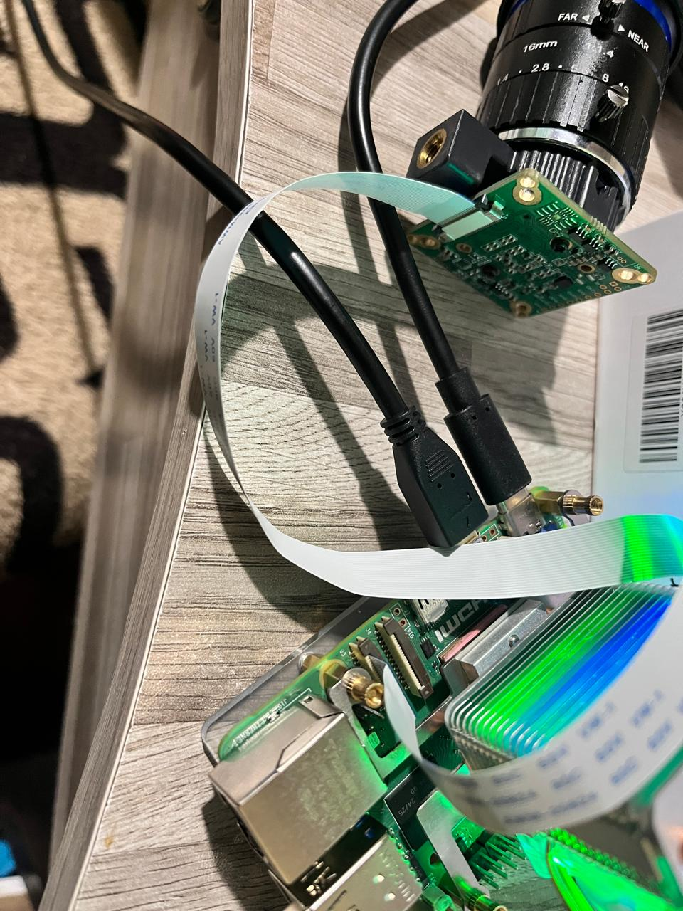
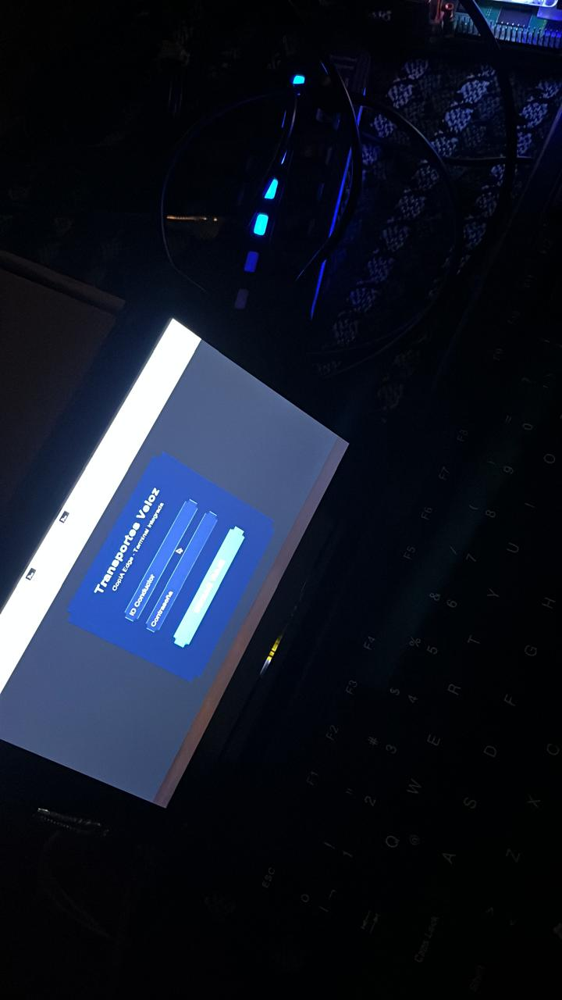
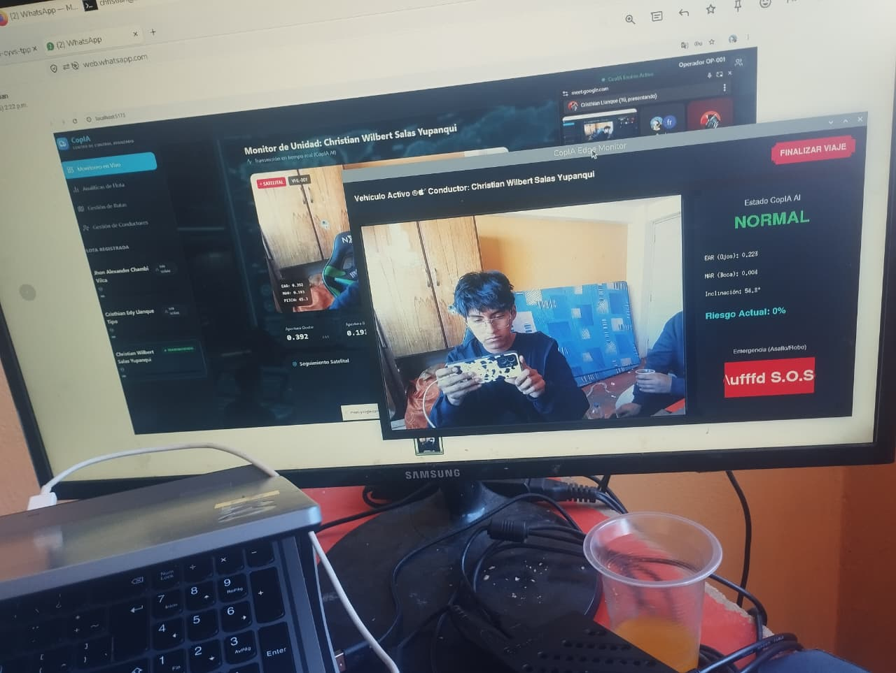
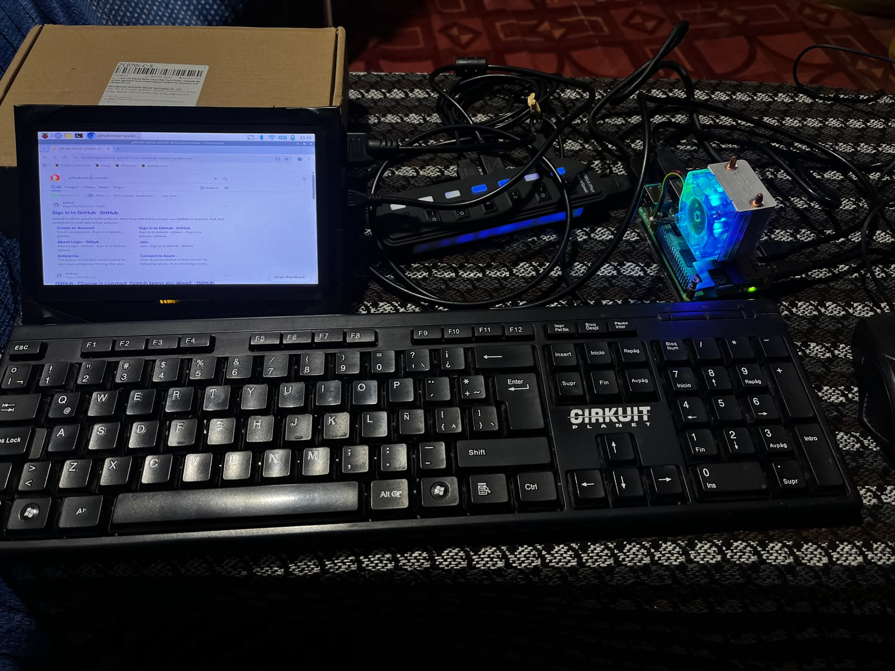
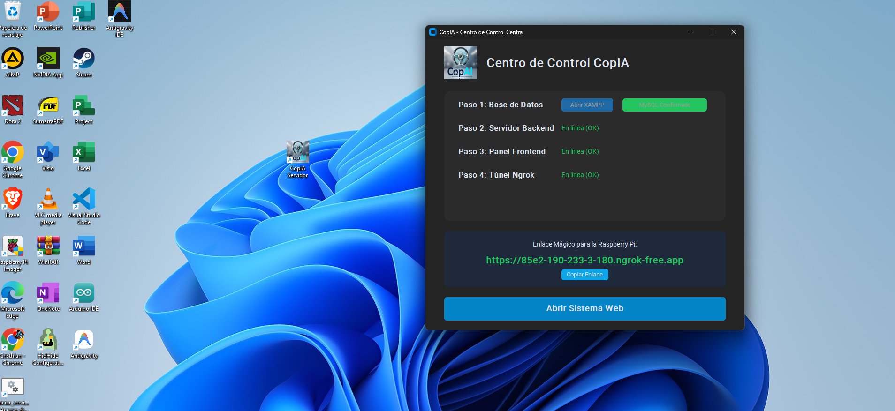
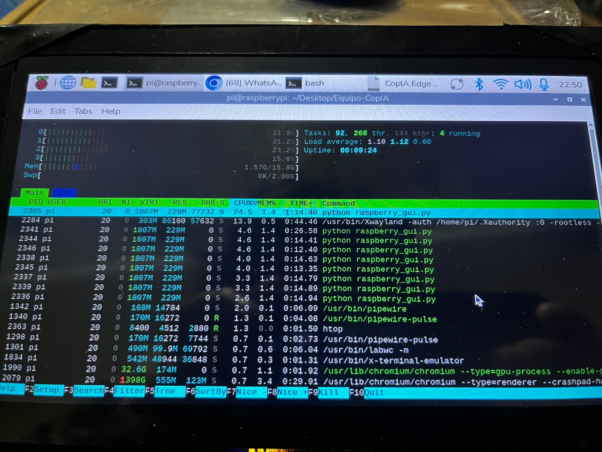

Entregable 3: Sistema de Software Funcional Integrado

Portada
- Título del sistema: CopAI - Asistente de Conducción AI (Edge & Central Server)
- Nombre del estudiante: Cristhian Edy Llanque Tipo - Christian Wilbert Salas Yupanqui - Frank Diego Choquehuanca
- Semestre: X
- Fecha: Julio 2026
- URL del Repositorio: https://github.com/cristhianllanque/Equipo-CopIA
Resumen Ejecutivo
CopAI es un sistema de software funcional distribuido (Edge-to-Cloud) que resuelve la problemática de los accidentes de tránsito ocasionados por la fatiga y distracción de conductores de flotas pesadas e interprovinciales. El sistema revoluciona los enfoques tradicionales al trasladar el procesamiento de Inteligencia Artificial pesada directamente a la cabina del vehículo (Nodo Edge en Raspberry Pi 4), garantizando que las alertas de micro-sueños se disparen en tiempo real, incluso si el vehículo atraviesa zonas sin cobertura de internet (zonas ciegas).
El software está 100% operativo y cuenta con una arquitectura híbrida: un cliente pesado en el vehículo que analiza video y extrae telemetría (módulo GPS SIM7600G-H), y una plataforma de administración central (API FastAPI + Vue.js + MySQL) operada por la empresa de transportes. La empresa puede observar el estado de su flota en vivo gracias a los túneles inversos (Ngrok) y la persistencia en Firebase. El resultado final es un ecosistema resiliente, escalable y automatizado que salva vidas.
Sección 1: Arquitectura e Integración
1.1 Arquitectura General del Sistema
CopAI implementa una arquitectura distribuida Edge-Cloud. Para evitar la latencia de enviar video por redes celulares inestables, el procesamiento (Inferencia AI) es estrictamente local en el Edge. El Servidor Central opera bajo el patrón de microservicios lógicos encapsulados en un monolito modular, proporcionando APIs RESTful.
1.2 Capas y Módulos
- Capa Edge (Vehículo - Python/CustomTkinter):
- Módulo de Visión AI: Implementa MediaPipe para extraer 468 landmarks faciales. Calcula en cada frame (a 30 FPS) el PERCLOS (Percentage of Eye Closure) y el EAR (Eye Aspect Ratio).
- Módulo de Telemetría (Hardware-in-the-loop): Se comunica vía interfaz Serial con el módulo SIM7600G-H para capturar Latitud, Longitud y Velocidad.
- Módulo de HMI (Human-Machine Interface): Interfaz gráfica táctil en Dark Mode.
- Capa de Lógica Central (Servidor Windows - Python/FastAPI):
- API RESTful protegida con JSON Web Tokens (JWT) y validación de esquemas con Pydantic.
- Capa de Presentación (Web - Vue.js/Tailwind CSS):
- Dashboard analítico Single Page Application (SPA) consumiendo la API Central.
1.3 Integración con Base de Datos
La persistencia es garantizada mediante la librería SQLAlchemy (ORM) conectada a MySQL. Esto desacopla el código de la base de datos, permitiendo sanitización automática de entradas (evitando SQL Injection) y manejo transaccional seguro al registrar los eventos_fatiga asincrónicamente.
1.4 Integración con APIs y Servicios Externos
- Ngrok API: Orquestación de redes superpuestas. Permite exponer la API local del Servidor Windows a la red pública (internet móvil del vehículo) sorteando el NAT estricto de las operadoras telefónicas.
- Google Text-to-Speech (gTTS): Servicio utilizado localmente para sintetizar y emitir alertas auditivas al conductor ("¡Alerta, fatiga detectada!").
- Firebase Realtime Database: Integración NoSQL secundaria para empuje (Push) de telemetría de alta velocidad, asegurando redundancia de los datos.
Sección 2: Funcionalidad del Sistema
2.1 Flujos Principales Implementados
- Flujo de Arranque Vehicular: El conductor enciende el vehículo, el sistema inicia automáticamente. El conductor ingresa sus credenciales en la pantalla táctil de la Raspberry Pi.
- Flujo de Detección (Bucle Crítico):
- La cámara lee el rostro. MediaPipe extrae los puntos.
- Algoritmo matemático calcula el EAR. Si EAR < 0.25 durante 1.5 segundos, se dispara bandera crítica.
- Hilo de voz ejecuta alarma. Hilo de red recopila GPS (SIM7600) y dispara un
POST /api/incidente. - Flujo de Monitoreo Web: El Administrador ingresa al Panel Vue.js, observa las métricas actualizadas en gráficas ECharts y gestiona las rutas.
2.2 Gestión de Usuarios, Permisos y Roles
El sistema maneja dos dominios de autenticación estrictamente separados:
- Rol Conductor (Edge): Autenticación básica contra endpoint /api/login_edge. Tienen acceso exclusivo a la interfaz de conducción, sin privilegios de lectura de reportes.
- Rol Administrador (Web): Autenticación JWT contra endpoint /api/admin/login. Acceso total al CRUD de Conductores, Rutas, y dashboard estadístico.
2.3 Evidencias Funcionales



Sección 3: Código y Diseño Técnico
3.1 Estructura del Repositorio
El repositorio Equipo-CopIA está estructurado bajo principios de modularidad (Separation of Concerns):
/Equipo-CopIA
├── /Frontend/ # Código fuente Vue.js, componentes y assets.
├── /scripts/ # Scripts de Bash (.sh) para aprovisionamiento automatizado.
├── api_main.py # Entry-point del Backend FastAPI (Controladores).
├── raspberry_gui.py # Lógica del Nodo Edge (CustomTkinter + IA Vision).
├── server_dashboard.py # Interfaz gráfica de orquestación de servidores en Windows.
├── requirements.txt # Dependencias de Python estandarizadas.
└── iniciar_servidores.bat # Script Batch de despliegue en Central.
3.2 Patrones y Buenas Prácticas Aplicadas
- Programación Asíncrona (Concurrency): En el nodo Edge, el procesamiento de video y la interfaz gráfica corren en el hilo principal (
mainloop), mientras que el consumo del GPS SIM7600 y las peticiones HTTP a FastAPI corren en hilos secundarios (Threading). Esto evita que la interfaz se congele si la red falla. - Inyección de Dependencias: Utilizado en FastAPI para proveer las sesiones de base de datos (
get_db) a las rutas. - ORM (Object-Relational Mapping): Las entidades de la base de datos se mapean como Clases en Python (Pydantic Models), asegurando tipado estricto.
3.3 Modularidad y Desacoplamiento
El sistema Edge es completamente tolerante a fallos de red. La cámara y el algoritmo de fatiga no dependen de que haya conexión a internet. Si el servidor central cae, la Raspberry Pi sigue alertando al conductor localmente de manera ininterrumpida.
3.4 Manejo de Errores y Validaciones
- Try-Catch de Red: Todos los bloques
requests.post()enraspberry_gui.pyestán encapsulados conTimeouty manejo de excepciones (requests.exceptions.RequestException). Si Ngrok cambia de URL, el sistema captura el error y permite actualizar la URL desde un script dinámico (update_url.sh) sin reescribir código fuente. - Watchdogs: En el Servidor Central,
server_dashboard.pyimplementa un "escáner" que hace pings (HTTP 200) a los puertos 8000, 5173 y 4040 antes de habilitar el botón de apertura del sistema web.
Sección 4: Despliegue o Instalación
Para demostrar la calidad de Grado/Tesis, el equipo ha erradicado el trabajo manual mediante aprovisionamiento automatizado (Infraestructura como Código - Shell/Batch).
4.1 Configuración e Instalación del Nodo Edge (Raspberry Pi)
El despliegue en cabina se automatizó en un 100% mediante Bash Scripting y Miniforge (Conda):
git clone https://github.com/cristhianllanque/Equipo-CopIA.git
cd Equipo-CopIA
bash scripts/install_raspberry.sh
El script install_raspberry.sh descarga Miniforge, crea el entorno aislado Python 3.11, instala pydantic-core (compilado para ARM64) y crea un Acceso Directo de escritorio LXDE para el conductor.

4.2 Configuración e Instalación del Servidor Central (Windows)
El centro de control no requiere uso de la terminal por parte del cliente. Se ha programado una aplicación orquestadora (server_dashboard.py) y un .bat que:
1. Verifica la inicialización de MySQL (XAMPP).
2. Levanta FastAPI, Vue.js y Ngrok de forma invisible (procesos pythonw.exe).
3. Retorna la URL generada de Ngrok al operador.
4.3 Evidencia de Despliegue

Anexos
5.1 Enlace a Repositorio Fuente y Manual
El código completo, historial de commits y manual de usuario (README.md) se encuentra disponible públicamente en GitHub: Repositorio Oficial: https://github.com/cristhianllanque/Equipo-CopIA
5.2 Capturas de Desempeño
Se ha comprobado que el sistema mantiene un uso de CPU por debajo del 65% en la Raspberry Pi 5 gracias al procesamiento en formato de tensor optimizado (TFLite) integrado en MediaPipe.
